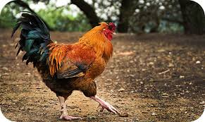
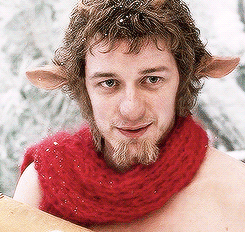
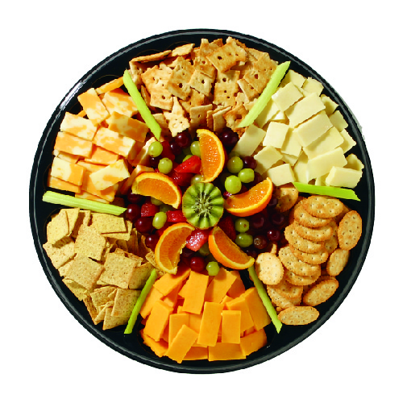
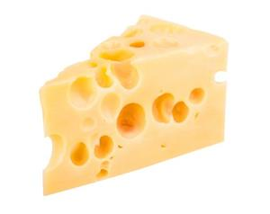
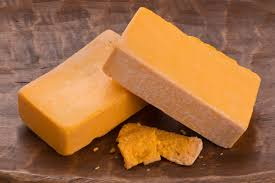
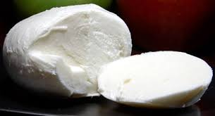
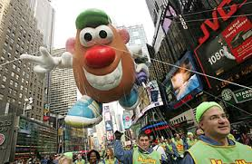

1. What is your name?
2. Where were you born?
3. What are your top three personality traits?
4. What is your favorite food?
5. You are a dinosaur. Predator, Herbavore, Omnivore, Dilophosaurus? Go.
6. What is your fondest childhood memory?
7. How do you feel about the name Terry? Boy or girl's name? Both?
8. I once had a roommate named Gary. Good or bad thing? Explain.
9. Would you describe yourself as a Word document, a Powerpoint Presentation, or an Excel Spreadsheet?
10. You are sharing a row of seats on a plane with Phil Collins. He says hi... You say?
Fancy Feast

You are a fresh can of Fancy Feast! Your feasts are so fancy! Your friends would be proud to say that they are proud to say that your feasts are in fact the fanciest feasts in the whole world. This also makes people not like you for your high end taste and primadonna tendencies. You should be ashamed of yourself.
Yellow Cheese

You are a block of yellow cheese. I think. You should be ashamed of yourself.
Rooster

You are a rooster. You are strong and bold. You puff out your chest and you prance around the farm like you own the place. Your pride will be your downfall. You should be ashamed of yourself.
Mr.Tumnus

It appears that you are Mr.Tumnus. You are spritely fawn from the land of Narnia. You have a talent for music. You can play the reed flute. But your cowardice leads you to kidnap an earth child for the White Witch, but you chicken out and end up in tears on your living room floor. You should be ashamed of yourself.
Rich Snippets
It appears that you are snappy, scrappy, business man Rich Snippets. You made it big including structured data markup in web content to help Google algorithms better index and understand the content. Your ingenuity will get you far, but unfortunately you are judgmental. And that is bad. Get a hold of your life Rich Snippets. Start accepting people for who they are. You should be ashamed of yourself.
Cheese Platter

It appears your personality type is an arranged plate of cheeses. You have a personality that ranges from mild to strong. Your emotional states contrast in flavors and take different shapes and colors. This makes you unpredictable and scarey to people who don't like to try new things, and children. Your at your best with bread and crackers. You should be ashamed of yourself.
The Swiss

Your survey results infer that you are Swiss cheese! Your personality traits suggest that you are known for being shiny and pale yellow. You seem to have a firmer texture than your cousin, the baby Swiss. Your conversations tend to leave a savory, mild, sweet nut-like taste, and you have holes known as eyes. People often feel uncomfortable around you because of this. You should be ashamed of yourself.
The Gharial
The results of our survey seem to indicate that you are the Gharial.You may also be called the gavial. You seem to be a fish-eating crocodile, native to the northern part of the Indian Subcontinent. Your serrated teeth are perfect for catching fish, but horrible for smiling in pictures. You ruin people's pictures. This makes you not liked. You should be ashamed of yourself.
The Cheddar

Congratulations you are Cheddar Cheese! Your personality suggests that you are the most widely purchased and eaten personality type in the world! You have a natural personality, but you slightly crumble under pressure. Although, in the right situations you can be quite smooth. Especially in your younger days. The more you mature, the sharper you get. You tend to wear yellow and orange clothes, which is just too bright for most people. Maybe it's time to look at a few Macy's catalogues and broaden your wardrobe horizon. You should be ashamed of yourself.
Jeff Bridges
Our survey indicates that your cheese type is Jeff Bridges. We love your beard in this picture, and your eyes always leave us wondering just what you are thinking. We really loved your performance in the remake of 'True Grit'. You were a gunslinging cowboy in that movie, and while you were a reliable shot, you had a bad temper, and this can be very off-putting for people that don't know the reliable trusting person that you really are. Our suggestion, open up a little bit more, and maybe people will want to socialize with you. You should still be ashamed of yourself.
Mozzarella

You are Mozzarella cheese! You appear to have a slieceable curd personality. You are a traditional cheese, tracing your heritage back to Italy and Bulgaria. Because of your traditional ways, change scares you. This fear of change keeps you from trying new things. And because you don't try new things you make your friends eat Applebees every weekend. You should be ashamed of yourself.
Floats

Congratulations, you are a float! Your are the type of person who likes to wrap text around images. You also, I don't know, you float around, you need to be cleared... You get cleared, then you go back to where you were supposed to be, and then my website looks good... I dunno. You should be ashamed of yourself.
Matthew DiSiena
Congratulations, you are Matthew DiSiena. Apparantly you are the type of person who wears green shirts, folds his hands in front of him and smiles for pictures. You also have a pretty wicked comb-over. Your downfall is that people may think you are too funny and too handsome. You should be ashamed of yourself.
Chandler Moisen
Congratulations, you are Chandler Moisen. Apparantly you are the type of person that likes to do the code with the computers and you make the web make pictures and the javascript and the floats and the jquery and the images and you make push the github and the css and the html and the floats. You should be ashamed of yourself.